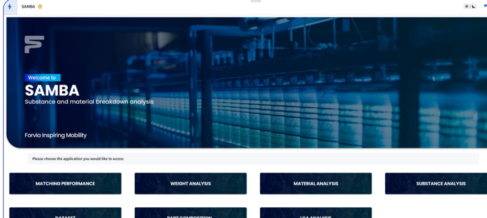
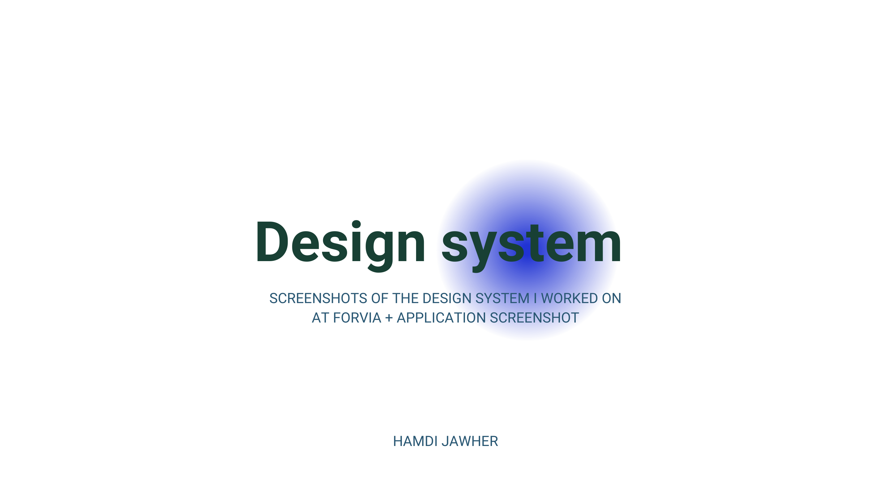
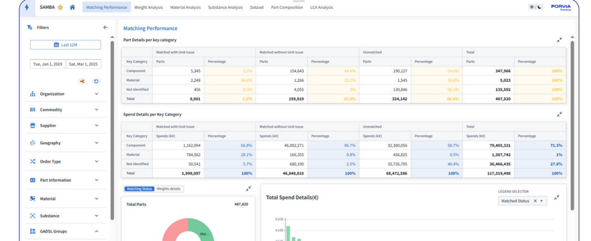
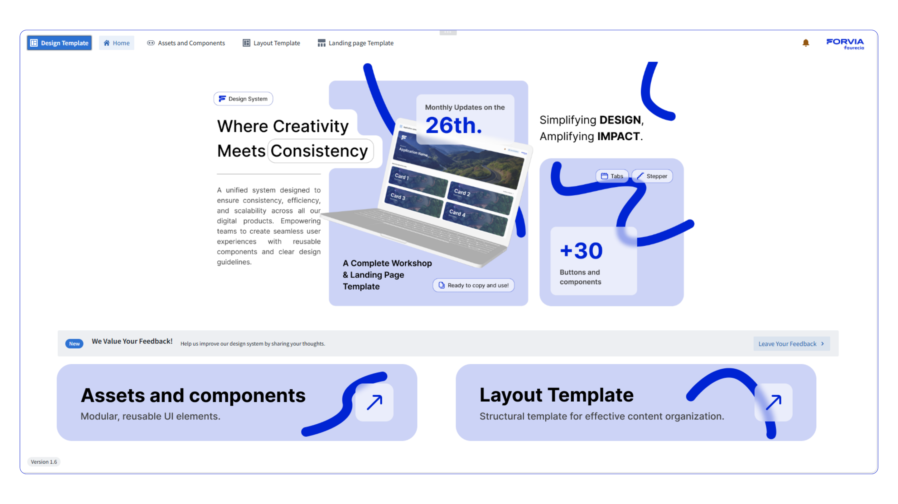
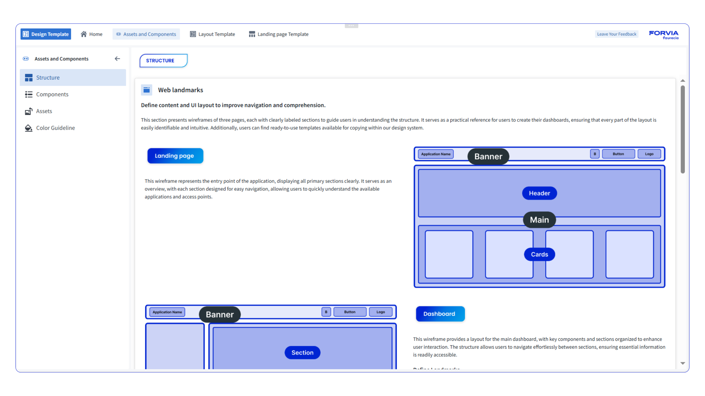
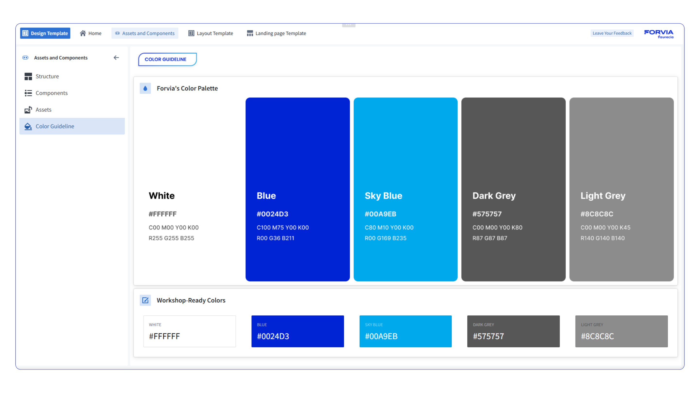
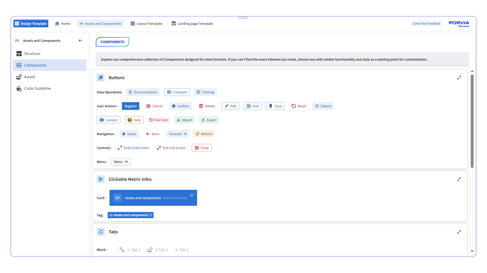
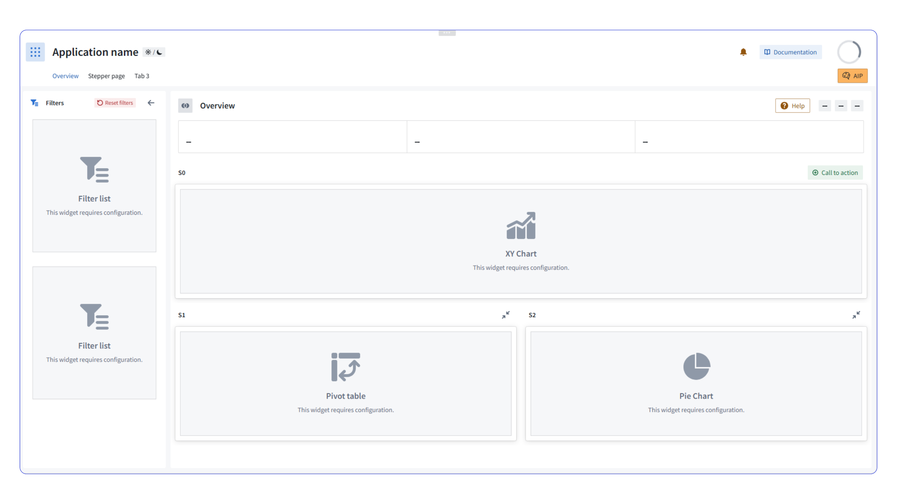
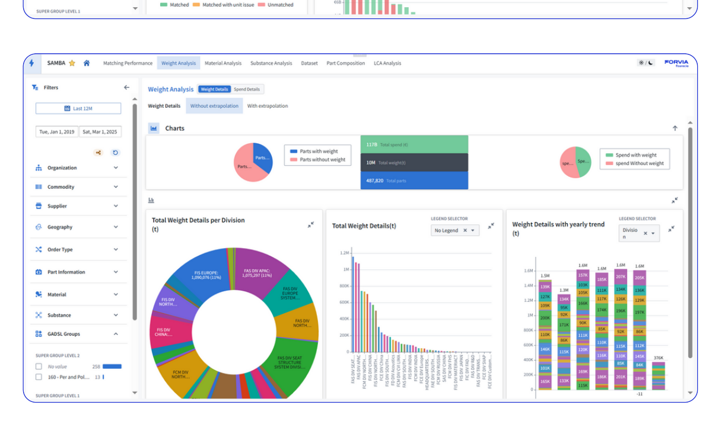
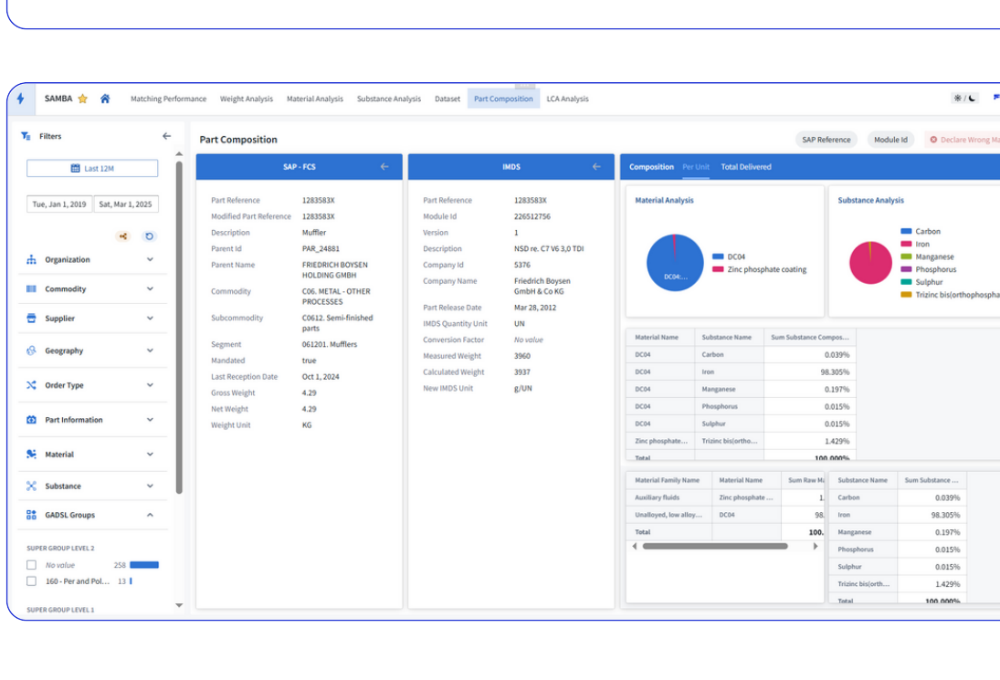

Case study
FORVIA via ADDINN
Turning FORVIA’s Palantir ecosystem into a clearer design system for industrial decision-making.
This project sat at the intersection of enterprise analytics, operational software, and design-system governance. My role was to audit recurring usability issues across FORVIA’s Palantir Foundry applications, define reusable foundations for dashboards and workflows, and create a more coherent visual and interaction language that could scale across products instead of being re-invented module by module.

Why this project mattered
FORVIA teams were already using Palantir-based applications for real manufacturing and business decisions, but the ecosystem did not yet feel like one product. Different modules introduced different layout logic, hierarchy rules, component behavior, and scanning patterns. That increased interpretation effort for users and delivery effort for teams.
The design-system work mattered because enterprise tools are judged by trust, clarity, and repeatability. If every dashboard behaves differently, adoption slows, stakeholder reviews take longer, design decisions become harder to defend, and future modules cost more to ship.
My goal was to create a shared operational grammar: a design language that makes dense industrial information easier to read today while also giving future squads a stronger system to build on tomorrow.
Role & scope
What I owned
A system-level design role focused on enterprise clarity, scalable UI rules, and cross-team alignment.
The work went beyond visual refinement. I audited Palantir modules, surfaced common usability failures, designed reusable foundations for dashboards and interfaces, documented standards that could support future delivery, and aligned technical and business stakeholders around one clearer product language.
Cross-product UX diagnosis
Reviewed existing FORVIA applications on Palantir Foundry, mapped recurring friction, and isolated the patterns creating inconsistency across analytics products.
Design-system foundations
Defined reusable rules for layout, cards, filters, tables, chart framing, information hierarchy, states, and navigation so the ecosystem could behave more predictably.
Bridge between stakeholders and product decisions
Worked with plant managers, business teams, and delivery stakeholders to turn operational requirements into product decisions that improved scanability without losing depth.
Documentation and rollout support
Created artifacts teams could reference during future modules, helping design and development speak through the same system instead of solving structure from scratch every time.
Enterprise UX maturity
Contributed to a more mature product-design practice through better audit reasoning, system thinking, and internal guidance around consistency at scale.
What the deck proves
The PDF is not just a final mockup showcase. It documents the design-system work directly: UI foundations, component relationships, and application screenshots that show how the system was meant to operate inside Palantir-based products.
Why this matters for hiring
This is the kind of work that signals senior product design in enterprise environments: structuring complexity, defining reusable rules, and helping an organization ship more coherent software over time rather than improving one screen in isolation.
Challenge
Design-system need
The ecosystem had valuable data, but the interface rules were fragmented enough to slow both users and teams.
The core challenge was not lack of functionality. It was the absence of a shared system. Without common patterns, users had to keep re-learning how to scan a dashboard, how to interpret a card, where to look for states, and how filters or actions behaved. At the same time, teams were paying a delivery penalty for every new module because structure and hierarchy had to be debated again and again.
In enterprise tools, inconsistency compounds quickly. A weak design system does not only create visual noise. It increases training time, forces more explanation in stakeholder reviews, complicates engineering handoff, and makes every future release more expensive than it needs to be.
Fragmented interaction logic
Different products used different spacing, hierarchy, state behavior, and component treatments, so the ecosystem felt disconnected.
Issue
Dense industrial information
Users needed to interpret manufacturing, logistics, and business data quickly, which made weak hierarchy and clutter especially costly.
Constraint
Scaling across modules
New product surfaces kept appearing, so one-off redesigns would not solve the underlying system problem.
Need
Multiple stakeholder priorities
Plant leaders, business owners, and delivery teams each needed different levels of depth, making design decisions more political without clear rules.
Stakeholders
Governance gap
Without agreed design foundations, every future release risked introducing more exceptions and less product coherence.
Scale risk


User problem
Operational teams needed interfaces that reduced interpretation time. They could not afford to re-learn hierarchy and controls every time they switched modules or moved from one manufacturing context to another.
Product problem
The organization needed a stronger foundation for scale: better reuse, more stable reviews, cleaner handoff, and a shared language that could keep future delivery from fragmenting even further.
Process
System to rollout
I treated the Palantir design system as a product layer: audit first, then reusable rules, then evidence inside real application screens.
The design-system deck shows that the work was not theoretical. It captures both the foundations and the product examples, which is exactly the right pattern for enterprise system design: define the rules, then prove that the rules hold inside real software.
Reusable foundations
I created shared patterns for filters, tables, hierarchy, states, empty states, and dashboard structure so teams could work from one operational grammar.
This meant designing for repeatability: not just what worked on one screen, but what could survive across product lines, data densities, and implementation realities in Palantir Foundry.
Research-led prioritization
UX audits and recurring pain points were turned into a prioritized improvement map that aligned design effort with business-critical workflows.
Instead of polishing the most visible dashboards first, I prioritized the product areas where user confusion, system inconsistency, and operational dependency were most expensive.
Audited Palantir applications first
Reviewed existing modules, mapped friction, and identified which recurring patterns were creating confusion across business and manufacturing workflows.
Defined system foundations instead of isolated fixes
Built reusable rules for layout, chart framing, cards, filters, spacing, and states so multiple applications could work from a consistent operational grammar.
Aligned stakeholders around one language
Worked with leadership, plant-side stakeholders, and delivery teams to make the system credible as a shared product foundation instead of a design-only artifact.
Documented for reuse and implementation
Created assets teams could reference during future modules, helping designers and developers work from the same decisions instead of reinventing structure.
Validated through product examples
Connected the design-system layer back to real application screens so the system could be judged against actual enterprise use, not abstract component diagrams.




My role in the room
I was not only refining visuals. I was translating between manufacturing reality, stakeholder priorities, data complexity, and implementation feasibility. A large part of the job was helping the organization agree on what “good” should look like across products that had grown in different directions.
Why the design system mattered so much
On Palantir-based enterprise products, the system layer becomes a leverage point. Good components, good hierarchy, and good documentation do not just improve one workflow. They reduce future friction across the whole portfolio of tools.



Outcome
Delivery impact
The result was a more coherent enterprise product language, with clearer decisions for users and more reusable logic for teams.
The system work improved more than aesthetics. It gave teams a shared interaction grammar, reduced unnecessary reinvention, and made dense industrial information easier to navigate. For users, that meant faster interpretation. For the product organization, it meant a stronger foundation for scaling Palantir applications without multiplying inconsistency.
UX outcome
The experience became easier to scan, easier to trust, and more predictable across modules. Instead of treating each dashboard as an isolated design problem, the ecosystem started to feel like one coherent product language.
That coherence matters in enterprise environments because it reduces training friction, lowers interpretation effort, and helps users stay focused on the operational signal rather than the interface itself.
Product outcome
The system reduced repeat design effort, improved cross-team consistency, and gave the organization a stronger foundation for shipping future operational tools with less friction between design and development.
It also improved design governance. New modules could now be discussed in relation to a shared system instead of being debated as disconnected interface exceptions each time a release was scoped.
What this signals as a designer
This project shows the kind of senior design work that often matters most in enterprise settings: diagnosing systemic issues, defining repeatable rules, and using design systems as a product-management tool for scale, not just as a visual asset library.
What I would push next
The next step would be tighter governance around adoption: pattern audits on new modules, measurement of which components reduce support load the most, and a shared review framework that keeps product decisions aligned with system principles as the portfolio grows.
Consistency is a product lever
On enterprise systems, consistency is not cosmetic. It affects adoption, training
time, implementation cost, and how quickly users can act with confidence in dense
operational environments.
Design maturity increased through structure
Beyond the interface itself, the project helped establish a more mature design
practice around reuse, documentation, stakeholder communication, and decision
traceability for future delivery work.
A design system is a delivery accelerator
On products like this, the value of the system shows up in reduced ambiguity,
faster iteration, and more stable implementation decisions long after the first
screens are designed.